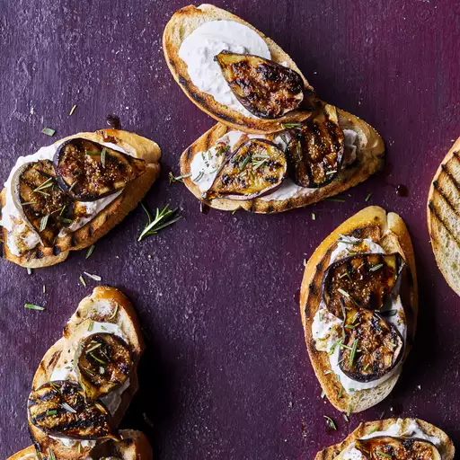

Burrata Bruschetta with Figs
Rating: 4.7 | 6 Reviews |5 photos
I can't guarantee you'll be able to find Burrata and fresh Black Mission figs, but if you can, you really must give this a try. I'll tell you right now that there really isn't a substitute for this heavenly cheese.
Ingredients
- 12 Black Mission figs, halved lengthwise
- 2 tablespoons balsamic vinegar
- 2 tablespoons extra virgin olive oil
- 6 ounces Burrata cheese, thickly sliced
- 6 (1/2 inch thick) slices Italian bread, toasted
- sea salt and ground black pepper to taste
Directions
- Preheat an outdoor grill for high heat, and lightly oil the grate.
- Place figs, skin-side down, on grill. Cook until figs start to swell and bubble, 2 to 4 minutes.
- Whisk together balsamic vinegar and olive oil until completely combined, about 1 minute.
- Place Burrata cheese on top of each piece of toast. Spread figs around bread and drizzle with balsamic vinegar mixture. Season with sea salt and black pepper to taste.